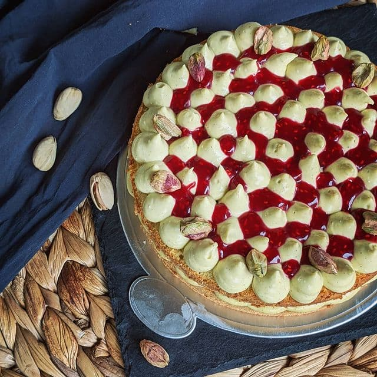
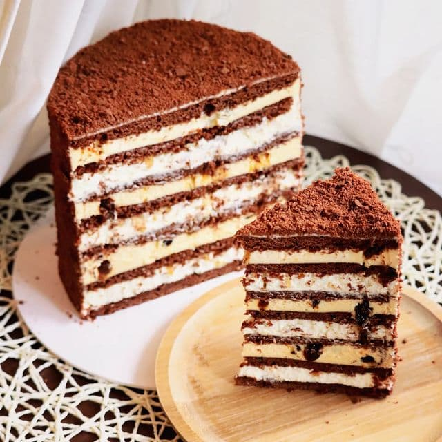
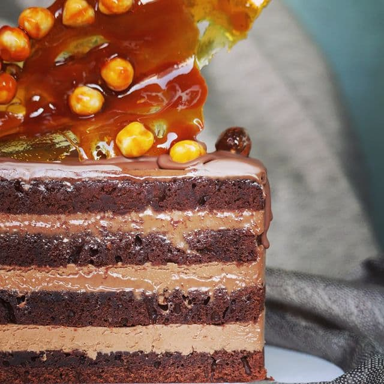
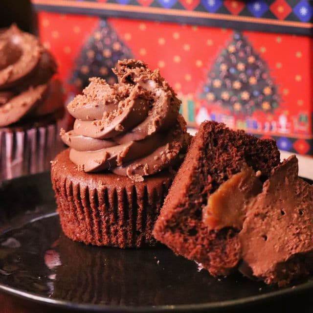

Dacha is a cozy peaceful place away from the city and surrounded by nature. It's a place where you can eat a strawberry right from the bush or pick some apples from a tree to make a pie. You can lay in a hammock under the shade of trees to read a book or take a nap.
Dacha is a place where everything is mixed and matched. Old wooden furniture that holds history along with grandma's old china; an old vinyl player; shelves filled with books and magazines dating back to the USSR; picture frames and albums that hold faded photos of relatives whom you never met; herbs drying on the kitchen windowsill; a swirling scent of teas, soil, and leaves. Dacha is where you can rest your soul.
Cakes
Bounty
Chocolate cake
Coconut cream soak
Coconut and white chocolate candies
Dark chocolate and coconut cream mousse
Milk chocolate frosting
Manhattan’s Strawberry
Vanilla bean cake
Creamy soak
Strawberry cream
Strawberry layer (compote)
White chocolate vanilla ganache
Coated in Mascarpone and strawberry cream
Secret of the Profiterole
Rich and moist brownie like chocolate cake
Cocoa soak
Chocolate mousse
Dark chocolate glaze
Profiteroles filled with white chocolate vanilla bean ganache (profiteroles
are also inside of the cake, in the mousse layer)
Orange
Sponge cake with orange juice and peel in it
Orange gel made from freshly squeezed oranges
Soft cream–cheese
Modern Carrot
Moist carrot cake with raisins, walnuts, and a warming mix of spices
Soft mascarpone cheese mousse
Heaps of melting cream–cheese frosting
Lemon Fresh
Zesty sponge cake
Milky soak
Lemon ganache
Lemon mousse with white chocolate and mascarpone
Fresh strawberry compote
Fahrenheit Mousse
Lime sponge cake
Fresh mint mousse
Strawberry jelly with raspberries
Lime ganache with raspberries
White chocolate glaze
Lime ganache for decoration

Pistachio & Raspberry
Pistachio cake
Raspberry filling
Pistachio Mascarpone frosting
Napoleon
20 thin and flaky, puff pastry cake layers
Vanilla bean Diplomat cream

Chocolate Honey
Layers of chocolate honey cake (contains actual honey)
Sour cream frosting with nuts
Vanilla bean souffle with prunes
Berry & Mikan Bento
A small cake for 2–3 people to enjoy.
Vanilla bean sponge cake
Creamy soak
Greek yogurt mousse
Berry or mikan compote
White chocolate ganache
Classic Carrot
Carrot cake with lots of nits and spices
Chocolate caramel
Cream cheese frosting
Simple Chocolate
Chocolate sponge cake
Chocolate cream–cheese frosting
Chocolate glaze
Hazelnut Delicacy
Hazelnut cake
Classic Bird's milk souffle
Hazelnut souffle
White chocolate ganache (tastes like condensed milk)
Mascarpone cheese frosting for decoration

Chocolate Shock
Chocolate sponge cake with hazelnut praline
Cocoa soak
Dark and milk chocolate ganache with hazelnut praline
Cupcakes
Strawberry Ice–cream
Vanilla bean cupcakes
Strawberry filling with bits of strawberries
Creamy Mascarpone frosting with strawberry puree
Tea Pear
Cupcakes with bits of pear
Pear filling
Earl Grey white chocolate ganache

Chocolate & Caramel
Rich chocolate cupcakes
Salted caramel filling
Milk chocolate cream‑cheese frosting.
Pistachio & Raspberry
Pistachio cupcakes
Raspberry filling
Creamy pistachio Mascarpone frosting
Carrot
Carrot cupcakes with walnuts and raisins, cinnamon, nutmeg and ginger
Caramel filling
Cream‑cheese frosting
Chocolate Cherry
Chocolate cupcakes with bits of sour cherries
Sour cherry marmalade
Double cream cheese frosting (classic and with milk chocolate)
Lemon Merengue
Cupcakes with lemon zest
Lemon curd made from fresh lemon juice and zest
Italian merengue
I'm Diana, your marshmallow queen!
Let's get acquainted!
Originally from Russia, I've lived in Tokyo for only 4 years. Designer by education, painter (traditional and digital) by vocation, and a cook by love.
I'm married and recently gave birth to my first son. üíú My brain needed to continue its creativity, but with a newborn brushes and canvases are out of reach. That's how I ended up in the world of marshmallows. I love to create, to cook, and to feed.
@cobra_di is my main account. I share simple and delicious recipes there, sometimes they are even healthy. üòÅ My face may show up there at times too.